DinoKart
O Kartódromo da Lourinhã: uma pista de 920 metros ao ar livre, técnica e com desníveis, para quem tem 10 anos ou mais.
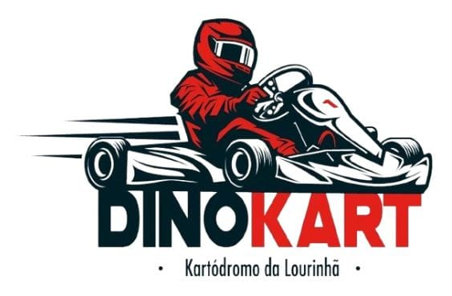
Sobre o negócio
O DinoKart é o Kartódromo da Lourinhã, na Estrada Nacional 247, em Casal da Murta. Tem uma pista ao ar livre com 920 metros, técnica e com desníveis naturais, e cronometragem eletrónica em todas as sessões. É a pista oficial da Sodi World Series em Portugal e recebe provas do Campeonato Nacional de Karting.
Não é preciso reservar: o bilhete compra-se no local. O capacete e a touca estão incluídos e o estacionamento é gratuito.
Preços por sessão
- Karts 120cc e 200cc (a partir dos 10 anos e 1,35 m): 20 € por 15 minutos, 37 € por 30 minutos.
- Karts 270cc (a partir dos 16 anos, com experiência): 26 € por 15 minutos, 47 € por 30 minutos.
- Em grupo (mínimo 12 pilotos), com treino e corrida: desde 35 € por pessoa nos 120cc e 200cc e desde 46 € nos 270cc.
- Troféu ou medalha: mais 3 € por pessoa.
Preços do site oficial em novembro de 2026; confirma antes de ir. Ver o folheto com preços e horários.
Mais do que corridas
- Festas de aniversário com sessões adaptadas às idades.
- Eventos de empresa: provas individuais, por equipas ou de resistência.
- Simulador de corrida com volante e cockpit profissional.
- Snack-bar com petiscos, bifanas, hambúrgueres e pizzas.
Horário
De quarta a segunda, das 10h00 às 13h00 e das 14h00 às 18h00, de novembro a março; de abril a outubro fecha às 19h00. Fecha à terça.
O apoio à Eclipse
Vouchers
O DinoKart apoia a Eclipse com vouchers.
Como em todos os patrocínios, o uso deste apoio fica registado e será explicado aqui.
Capacete posto, pé no fundo.
A pista vista de cima, os karts em corrida e o simulador. Fotografias do site oficial do DinoKart.
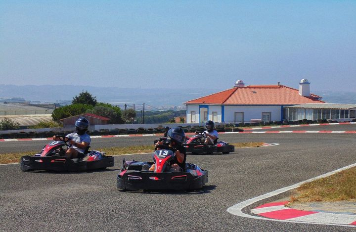
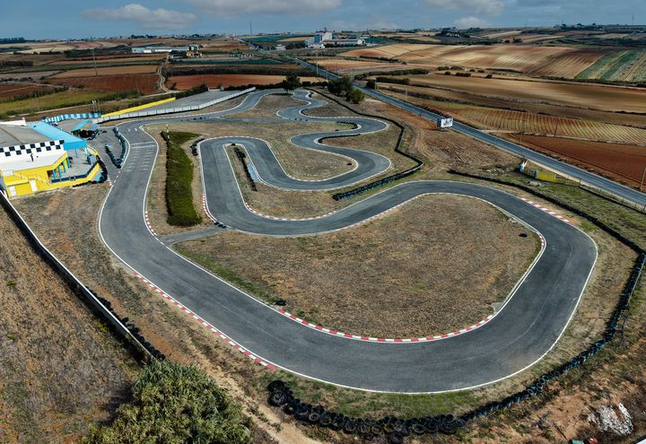
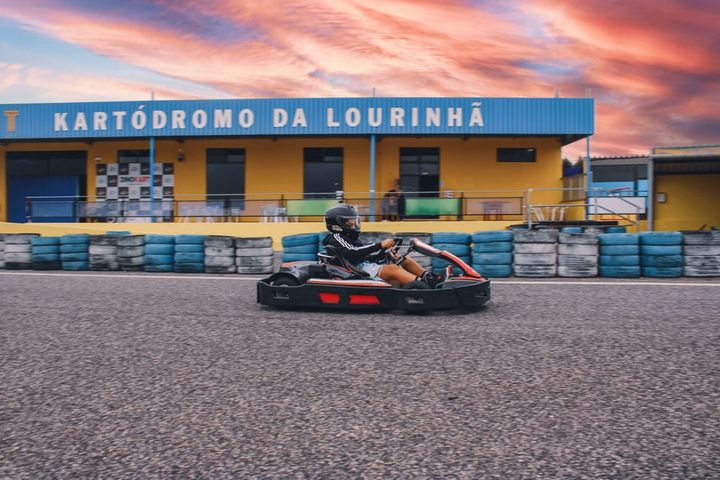
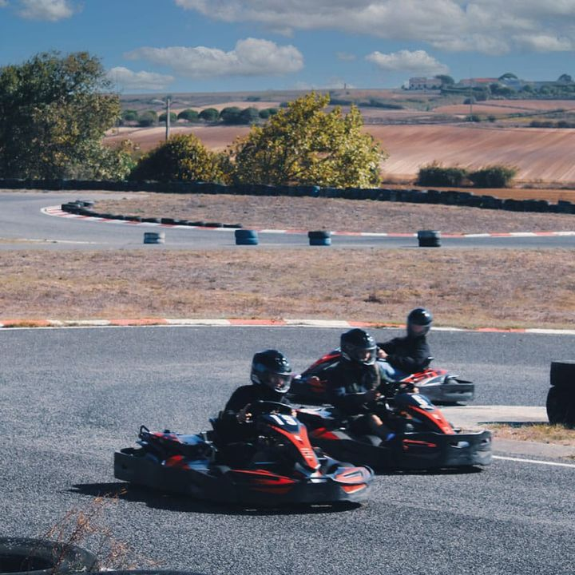
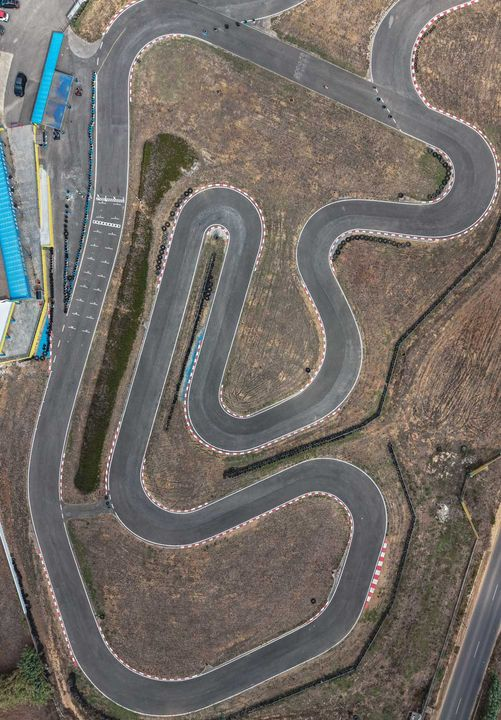
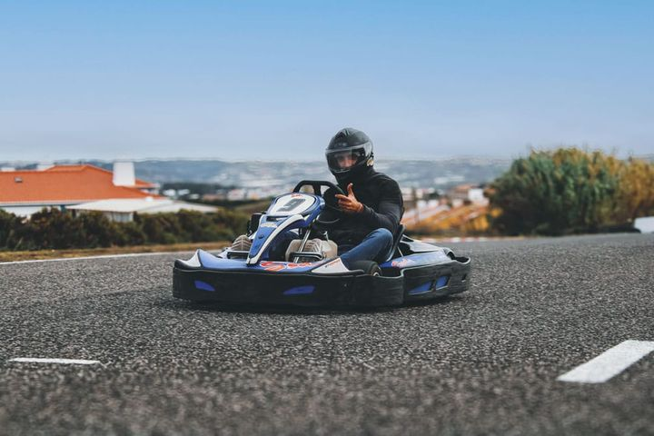
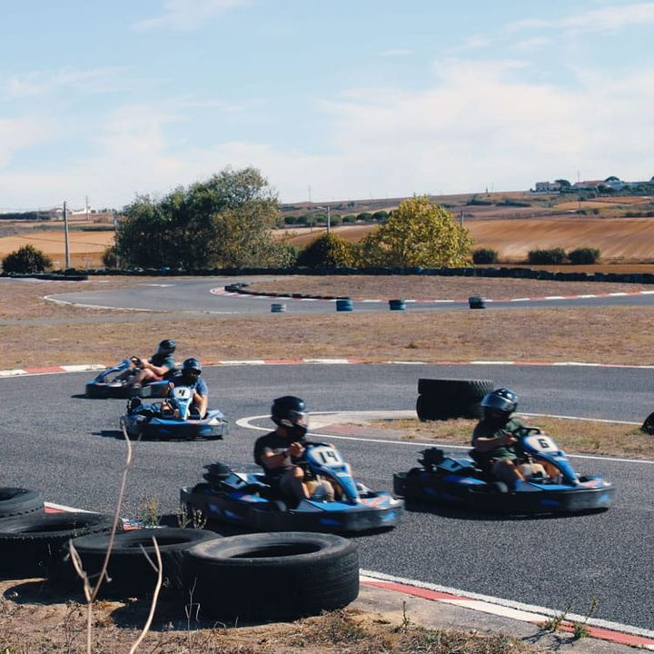
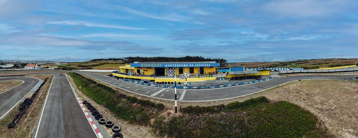
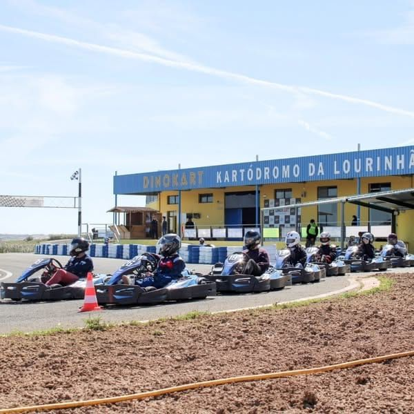
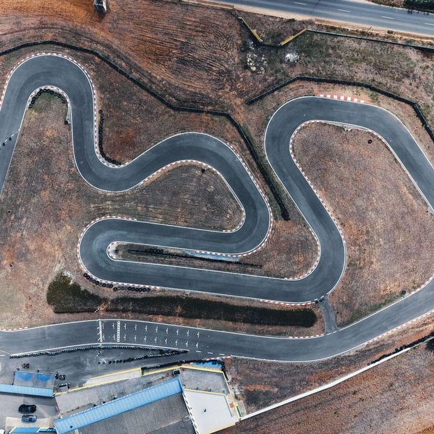
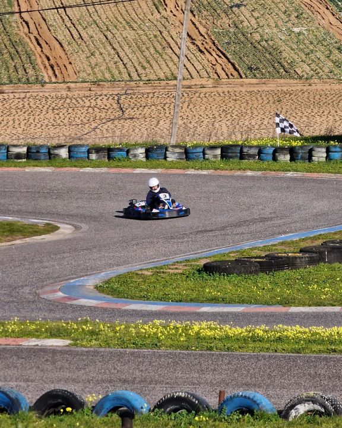
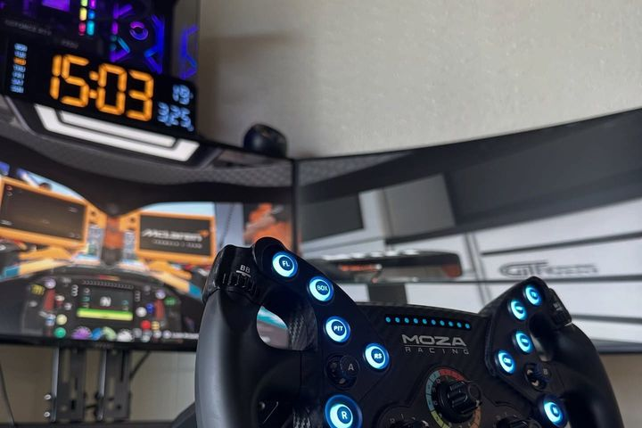
Conhece os restantes
patrocinadores.
Volta à página de patrocinadores para ver todas as entidades que apoiam a Eclipse, ou fala connosco se também quiseres apoiar.